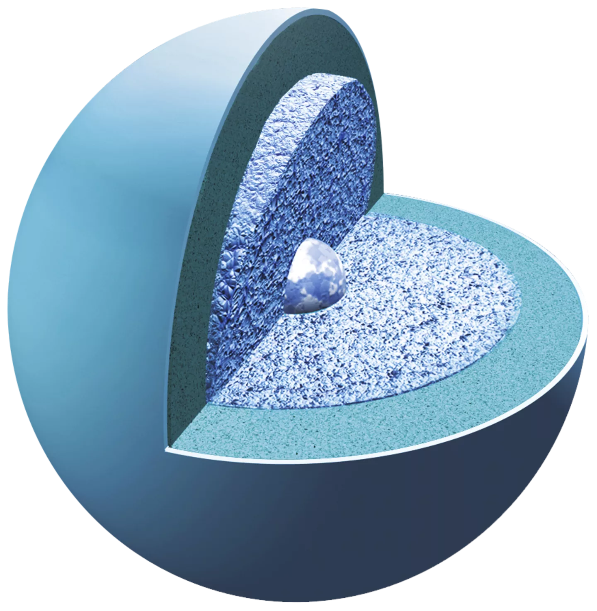

URANUS
➜
Uranus is the seventh planet from the Sun. Its name is a reference to the Greek god of the sky, Uranus, who, according to Greek mythology, was the great-grandfather of Ares (Mars), grandfather of Zeus (Jupiter) and father of Cronus (Saturn). It has the third-largest planetary radius and fourth-largest planetary mass in the Solar System. Uranus is similar in composition to Neptune, and both have bulk chemical compositions which differ from that of the larger gas giants Jupiter and Saturn. For this reason, scientists often classify Uranus and Neptune as "ice giants".
Quick Facts
Day
17 hours
YEAR
84 Earth years
]
Radius
25,362 kilometers
Planet Type
Ice Giant
Moons
27
Rings
13
source: solarsystem.nasa.gov
10 Need-to-Know Things About Neptune
1
Uranus is about four times wider than Earth. If Earth were a large apple, Uranus would be the size of a basketball.
2
Uranus orbits our Sun, a star, and is the seventh planet from the Sun at a distance of about 1.8 billion miles (2.9 billion kilometers).
3
Uranus takes about 17 hours to rotate once (a Uranian day), and about 84 Earth years to complete an orbit of the Sun (a Uranian year).
4
Uranus is an ice giant. Most of its mass is a hot, dense fluid of "icy" materials – water, methane and ammonia – above a small rocky core.
5
Uranus has an atmosphere made mostly of molecular hydrogen and atomic helium, with a small amount of methane.
6
Uranus has 27 known moons, and they are named after characters from the works of William Shakespeare and Alexander Pope.
7
Uranus has 13 known rings. The inner rings are narrow and dark and the outer rings are brightly colored.
8
Voyager 2 is the only spacecraft to fly by Uranus. No spacecraft has orbited this distant planet to study it at length and up close.
9
Uranus cannot support life as we know it.
10
Like Venus, Uranus rotates east to west. But Uranus is unique in that it rotates on its side.
X

The last picture of Uranus